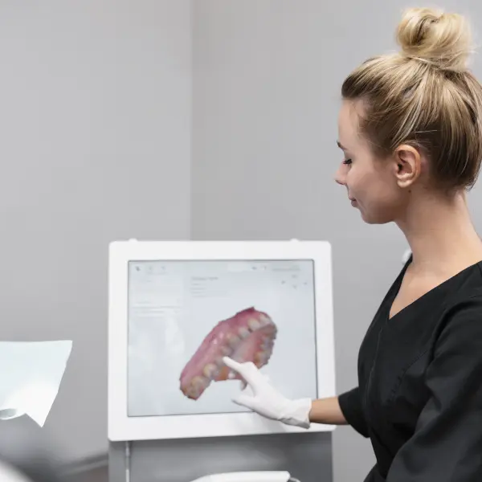
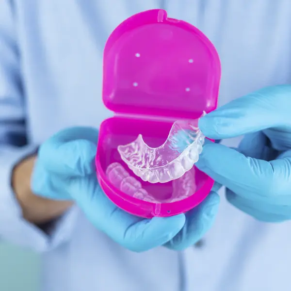

ALINEADORES INVISIBLES
Transformamos tu sonrisa con alineadores invisibles de última tecnología. Sin brackets, sin dolor, sin que nadie lo note.
Respondé 4 preguntas rápidas y descubrí si sos candidato
ALINEADORES INVISIBLES
Tecnología de última generación, planificación 100% digital y resultados visibles desde las primeras semanas. Sin brackets, sin restricciones, sin que nadie lo note.
Nadie nota que llevás ortodoncia. Ideales para profesionales, adultos y adolescentes que buscan discreción total en su vida diaria.
Se retiran para comer, beber y cepillarte. Mantenés tu rutina de higiene sin ningún cambio y disfrutás de todas tus comidas.
Resultados visibles desde las primeras semanas. Tratamientos desde 6 meses para casos leves, con movimientos más precisos y controlados.
Planificación 100% digital. Ves en pantalla cómo va a quedar tu sonrisa antes de empezar. Tiempos y precios cerrados desde el primer día.
Materiales suaves y biomecánica controlada. Sin alambres ni brackets que irriten. Sin urgencias ni visitas de emergencia por roturas.
Escaneo intraoral digital, software de planificación de última generación y alineadores fabricados a medida con materiales premium.
Casos que tratamos con alineadores
EL PROCESO
Un proceso simple, cómodo y predecible con tecnología de vanguardia
Evaluamos tu caso con escaneo 3D y te mostramos una simulación de tu sonrisa final.

Diseñamos tu tratamiento digital con movimientos precisos y tiempos claros.

Recibís tus alineadores transparentes a medida. Se cambian cada 2 semanas.
En 6 a 18 meses, tu sonrisa está lista. Colocamos retención para mantener el resultado.
TEST RÁPIDO
Respondé 4 preguntas rápidas y descubrí si sos candidato
¿Qué te gustaría mejorar de tu sonrisa?
¿Qué es lo más importante para vos en un tratamiento?
¿Usaste ortodoncia antes?
¿Cuál es tu rango de edad?
Según tus respuestas, los alineadores invisibles son una excelente opción para vos. Agendá una consulta gratuita para evaluar tu caso en detalle.
Agendá tu turno →Paso 1 de 4
SERVICIOS COMPLEMENTARIOS
Más allá de los alineadores, ofrecemos todos los tratamientos que tu salud bucal necesita en un solo lugar.
Recuperá el brillo natural de tus dientes en una sola sesión con tecnología LED de última generación.
Diseñamos tu sonrisa ideal combinando carillas, blanqueamiento y contorneado. Todo planificado digitalmente.
Atención integral con enfoque preventivo y personalizado para mantener tu salud bucal en óptimas condiciones.
Cuidamos la salud bucal de los más chicos en un ambiente cálido y amigable, especializado para cada edad.
RESULTADOS REALES
Más de 1.800 casos con alineadores terminados. Cada sonrisa es única; cada resultado, verificable.
"Llegué con mucho miedo porque pensé que los alineadores eran solo para casos simples. En Smart Smile me explicaron todo, me mostraron cómo iba a quedar mi sonrisa antes de empezar y el resultado superó mis expectativas. En 14 meses no me reconocí."
"Lo que más me sorprendió fue la precisión. Me mostraron en pantalla exactamente cómo iban a moverse mis dientes, mes a mes. Trabajo dando clases y nunca nadie notó que tenía ortodoncia. Una experiencia completamente distinta a los brackets."
"Había tenido brackets de chica y con los años los dientes se me volvieron a mover. Tenía 42 años y pensé que era tarde. En Smart Smile me dijeron que era el caso ideal para alineadores. En 10 meses recuperé la sonrisa que siempre quise tener."
PRIMERA VISITA GRATUITA
Agendá tu turno hoy. La primera consulta es completamente gratuita.